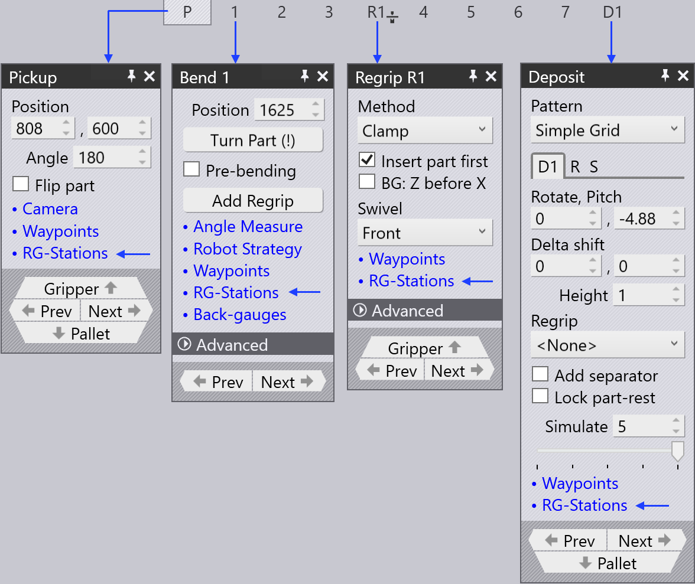

Omgribestationspanel
Omgribningsstationer omtales som RG-Stations i TecZone. RG-Station panelet bruges til at konfigurere omgribningsstationerne for en bend-cellemaskine.
For at få adgang til RG-Stations panelet:
-
Klik på RG-Stations linket fra Pickup panel, Bend panel, Regrip panel eller Deposit panel.
-
Alternativt, klik direkte på en omgribningsstation.
Afhængigt af bukningsoperationen og stationernes positioner viser RG-Stations panelet en alfabetindikator (P, R1, #1, D, osv.) inden for panelet.

Flip Part afkrydsningsfeltet i Pickup panelet bruges til at placere delen med vrangen opad i forhold til den nuværende position. Nogle gange er dette nyttigt for at undgå kollisioner mellem nedadvendte flanger og omgribningsstationsarmene. TecZone vil øjeblikkeligt genberegne en ny robotvej, når du vender delen.
| Når en omgribningsstation ikke bruges, ser panelet simpelt ud, da delens position ikke kan styres (det afhænger af klemningspositionen for delen mellem stempel og dyse). |
-
Stations bruges til at vælge en af stationerne eller til at deaktivere eller aktivere begge stationer.

-
Brug Positions indstillingerne til at justere stationens positioner på maskinens bundskinner. I billedet vist nedenfor, til venstre er stationerne ikke placeret under delen i begyndelsen.

Efter ændring af værdierne i Positions indstillingen er begge stationer placeret, så sugekopperne på RG-Stationen er placeret under delen.

Indstillingerne i Suction sektionen bruges til at konfigurere sugearmene.
-
Brug Type vælgeren til at ændre sugekoptype.
-
Brug Arm vælgeren til at vælge en eller alle sugearme. Når den er valgt, identificeres hver arm med dens etiket (A, B, C, osv.).
-
Brug Angle indstillingen til at rotere armen rundt (i 5° trin).
-
Brug Grid indstillingen til at udvide/trække armen tilbage (i 10 mm trin).

|
Du kan også interaktivt ændre vinklen og gitteret ved at trække skyderne individuelt. Sving over en sugearm for at se vinkel- og gitter-skydere. Når All arme er valgt, er det ikke muligt at ændre vinklen og gitteret interaktivt. |
-
Vælg sugearmens drifts state til off, on, eller removed.

-
Efter at have afsluttet sugeindstillingen, kan du bruge Copy Right indstillingen til at bruge den samme opsætning for den anden side af RG-Stationen.
-
Prev og Next linkene vises, hvis der er flere omgribningsoperationer i denne del, og bruges til at navigere mellem dem.
-
Regrip R1 linket bruges til at redigere hvilepositionen af delen på omgribningsstationerne.
Når du rekonfigurerer omgribningsstationen, kontrollerer TecZone for kollisioner med delen, robotten, griberen i realtid og opdaterer statusindikatorerne øjeblikkeligt.